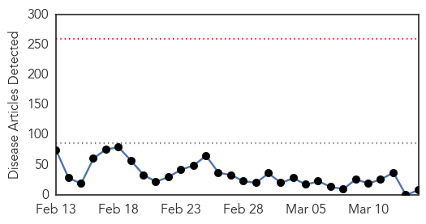

Influenza
30-Day Web Trend
0 alerts, 0 warnings

30-Day Twitter Trend
6 alerts, 0 warnings

Article Locations

Article Confidences

Top Articles:
- 0.937
- Study Suggests a New Strain of H1N1 May Carry Dangerous Mutations
- 0.924
- Strain of highly contagious bird flu detected in Kansas
- 0.916
- USDA: Strain of highly contagious bird flu detected in Kansas
- 0.868
- New avian flu outbreak along Mississippi flyway challenges fowl farmers
- 0.818
- Avian Flu Virus Detected at Three Farms, Wild Bird in US
- 0.771
- US poultry industry in peril as bird flu spreads
- 0.751
- March 13, 2015 Archives
- 0.742
- U.S. bird experts mystified by Midwest avian flu spread
- 0.740
- Poultry Owners Should be Vigilant in Watching for Signs of Avian Influenza
Top Tweets:
- 0.744
- Influenza H1N1 variant suspected in Indian influenza outbreak. http://t.co/S37b3rFdGW
Measles
30-Day Web Trend
0 alerts, 0 warnings

30-Day Twitter Trend
3 alerts, 0 warnings

Article Locations

Article Confidences

Top Articles:
- 0.996
- Measles could be next problem for West Africa
- 0.983
- Measles: Non-Vaccinated Beware
- 0.968
- WHICH IS THE BIGGER THREAT?
- 0.934
- Health officials say 136 measles cases in Quebec
- 0.922
- Disneyland measles outbreak appears to have peaked
- 0.841
- Aliso Niguel High School
- 0.724
- Parents, Officials Attend Tuberculosis Meeting After Student Exposure
- 0.562
- Idaho parents increasingly gun-shy over vaccines
Top Tweets:
-
No tweets found for Mar 14, 2015